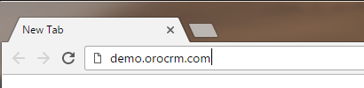

Log In¶
Access OroCRM and/or OroCommerce Application¶
OroCRM/OroCommerce is a web application and to access it you need to enter its address in a web browser.
If you are not currently logged into the Oro application, the Login page opens.
Log In¶
On the Login page, enter your OroCRM/OroCommerce credentials: username and password.
Important
Typically, you receive your credentials directly from an administrator or they are automatically sent to the email address specified in your user profile upon the profile creation.
OroCRM and OroCommerce can be set up to accept your existing corporate username and password. This is possible if your organization utilizes LDAP to share them across multiple applications. Please check with your system administrator to see if this is the case.
If you want to be automatically logged in the next time you open the OroCRM/OroCommerce application from this device, select the Remember me on this computer check box.
Click the Log In button.
Caution
It is strictly recommended to change your password immediately after the first login. For how to do this, see Change Your Password.
Log in Using an Authentication Code¶
As an additional security measure, an administrator may enable double-factor authentication for users. In this case, in addition to your username and password, you must enter also a special authentication code that you will receive to the email address specified in your OroCRM/OroCommerce user profile.
- On the Login page, enter your username and password and click the Log In button. The Authentication code page opens.
- On the Authentication code page, enter the code that you have received to your email address.
- Click Log In.

Log in with Your Google Account¶
If the Google Single Sign-On has been enabled for your organization, you can log in using your Gmail account. Usually this capability is enabled for corporate email addresses only, so your cannot use your personal mailbox credentials.
Important
The email used for the Google account and the primary email specified in your OroCRM/OroCommerce user profile must be the same.
On the Login page, click the login using google link.
If the you not logged into any Google accounts, after the link has been clicked, a usual Google log-in page will appear.
Log in into your Google account.
As soon as you have logged into you Google account, a request to use the account in order to log into OroCRM/OroCommerce will appear. Click the Allow button.